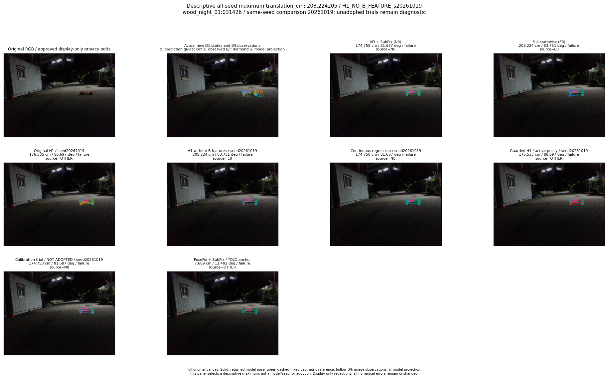
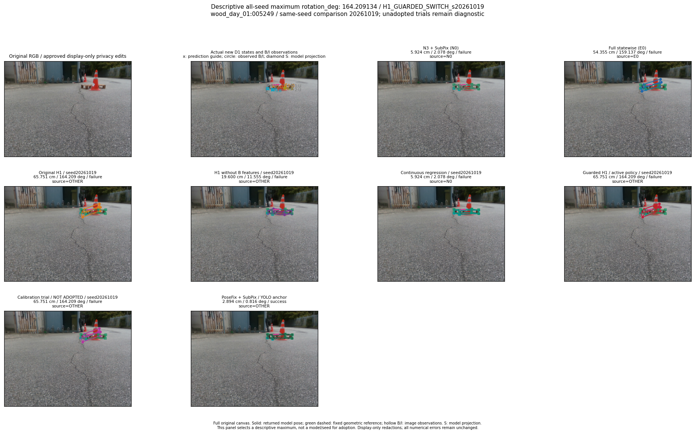

전체192장새 경로·전체 seed의 최대 위치·회전 오차
모든192장과 새9경로에서 각 축의 최대값을 결정적으로 찾은 설명용 패널입니다. 성능에 맞춰 seed나 정책을 채택하지 않았습니다. Trial은 미채택 진단입니다.
translation_cm / 208.2242047986846 / H1_NO_B_FEATURE_s20261019

rotation_deg / 164.2091339318346 / H1_GUARDED_SWITCH_s20261019
